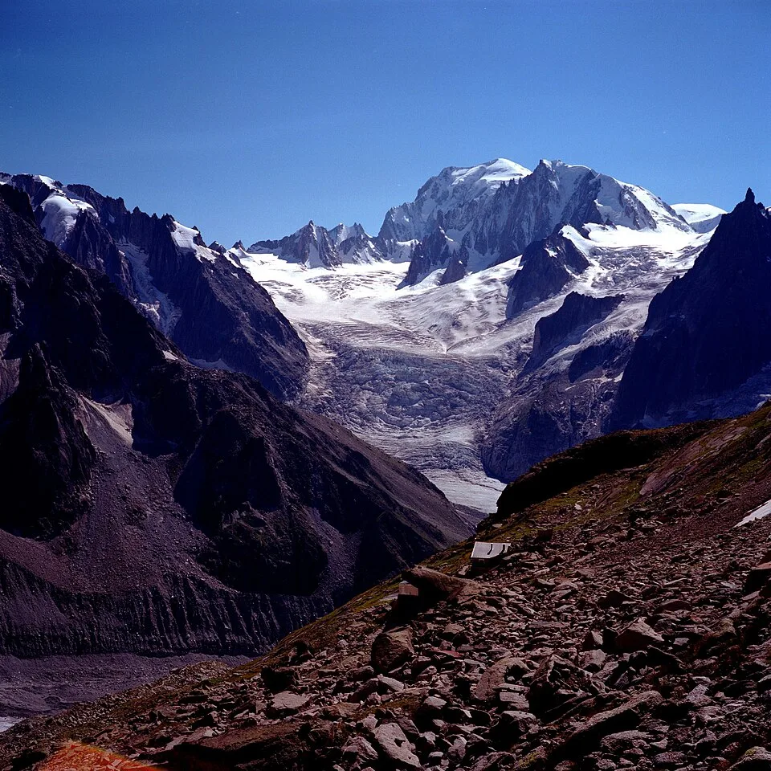
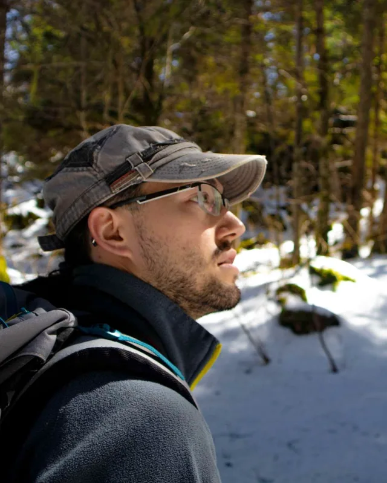
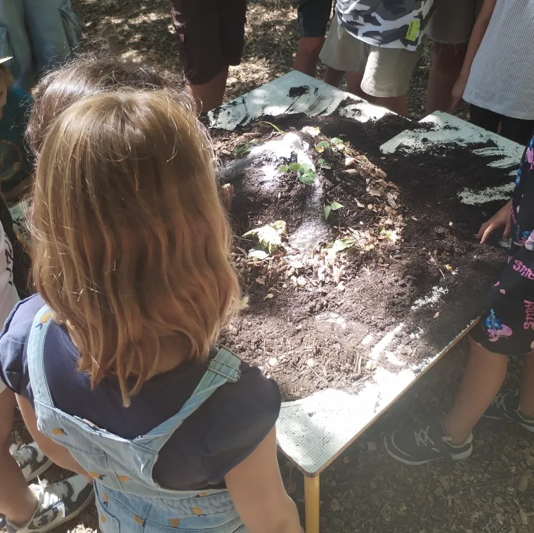
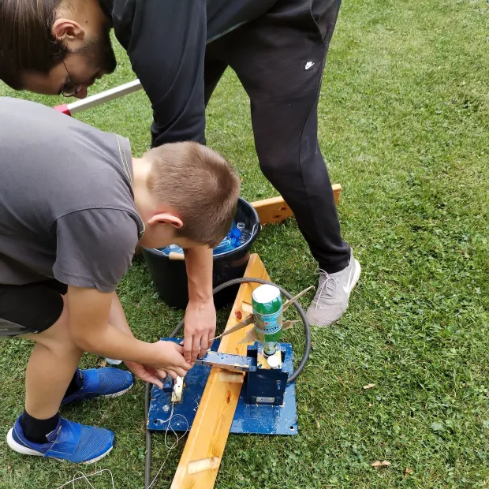
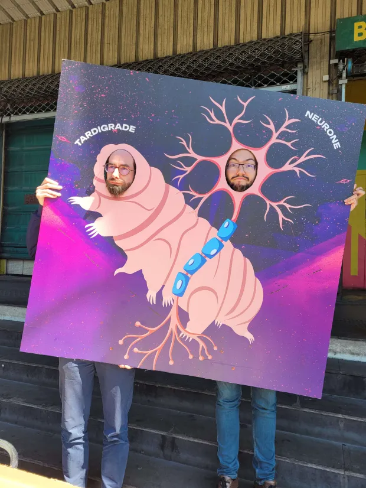

De l’infiniment petit aux sommets des Alpes
Médiateur scientifique à Grenoble, physicien des particules de formation. Je conçois et j'anime des ateliers et des dispositifs de médiation, et j'écris pour rendre les sciences accessibles.

Crédit : Natan PILLOT
« Moi c'est Hector — médiateur scientifique grenoblois, spécialisé dans la physique mais pas que ! Et passionné par les montagnes. »
Échanger autour d'un moment convivial plutôt qu'éduquer.
La médiation m'a appris à voir les sciences d'un autre œil, à me mettre à la place des différents publics et à me demander comment transmettre au mieux ma passion. C'est un échange pendant lequel j'apprends autant que j'explique.
Je suis actuellement actif dans l'association de transmission des savoirs scientifiques : AurorAlpes.



muons cosmiques ont traversé ta main (≈ 100 cm²) depuis ton arrivée sur cette page. Estimation : environ 1 muon par cm² et par minute au niveau de la mer.